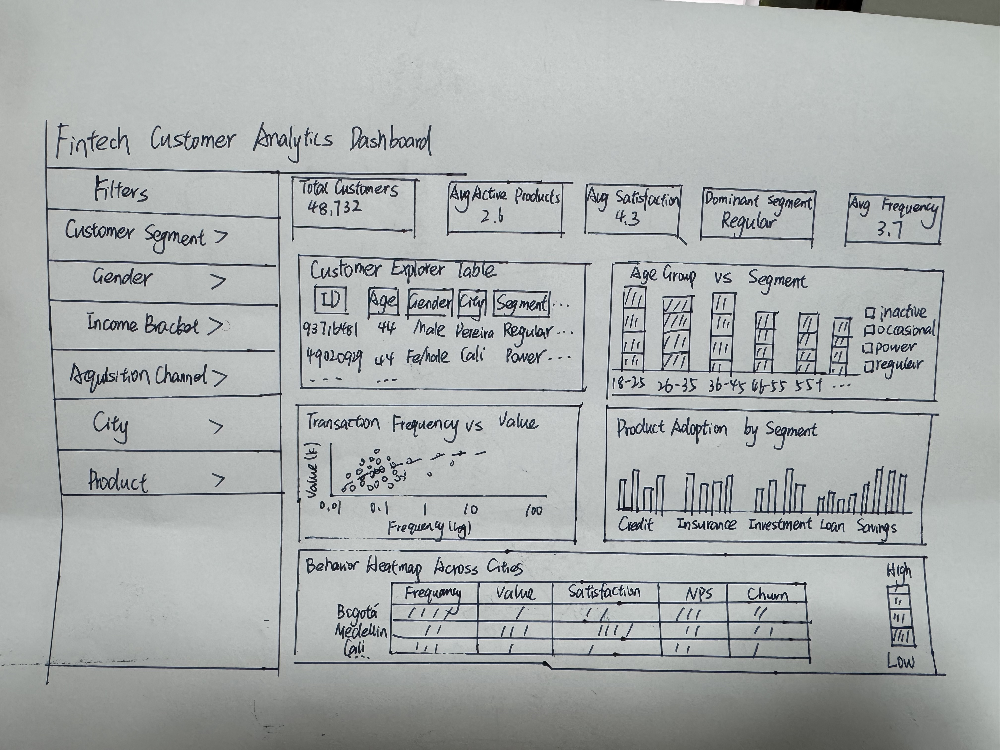
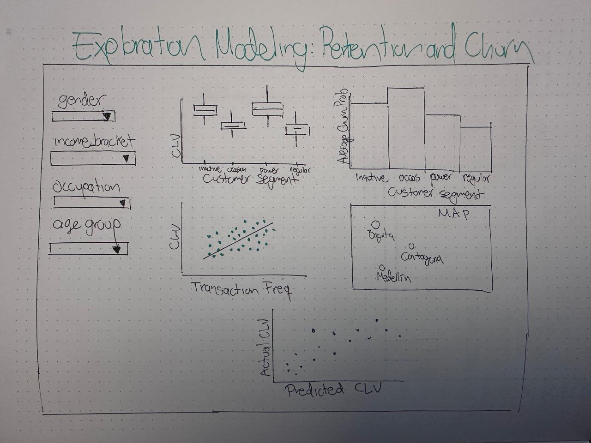
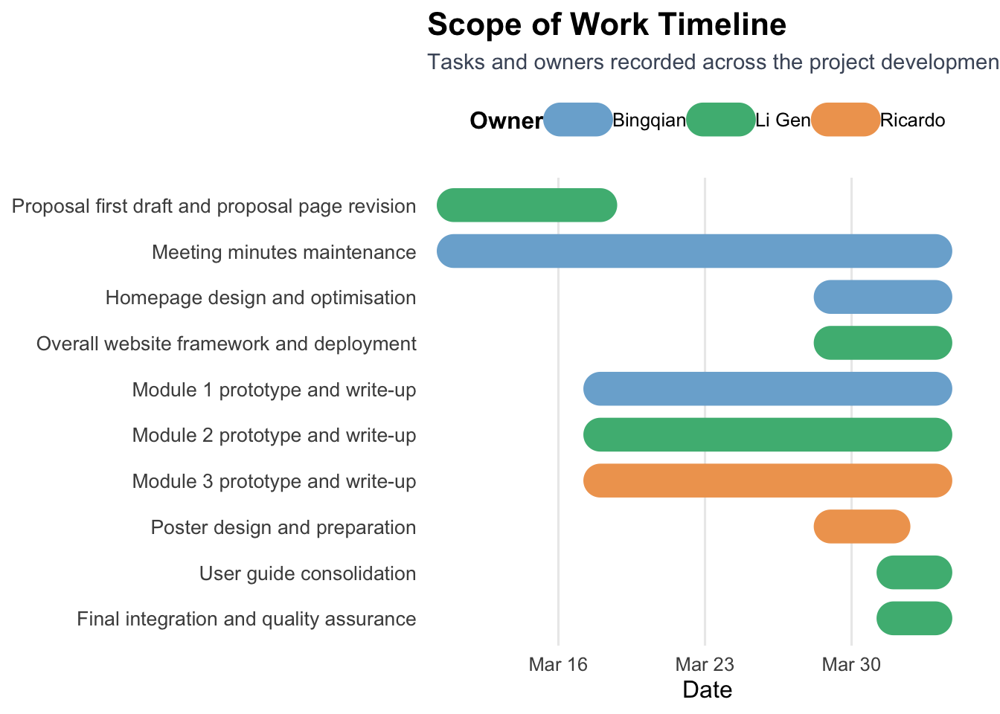

Show code
library(tidyverse)
library(readxl)
customer <- readxl::read_xlsx("../data/customer_data.xlsx")The rapid growth of fintech platforms has generated rich customer-level data across demographics, product adoption, digital engagement, transaction behaviour, and service experience. However, many business and product teams still rely on static spreadsheets or disconnected dashboards that do not clearly show how these factors relate to retention risk and long-term customer value.
This project is built around one core analytical question:
How do customer structure, platform behaviour, and service experience relate to retention risk and customer lifetime value in a fintech platform?
Using the COFINFAD (Colombian Fintech Financial Analytics Dataset), this project develops a web-enabled visual analytics application for fintech product, CRM, and business teams.
The project follows a progressive analytical workflow:
Customer Structure → Customer Engagement & Experience → Customer Retention & Business Value
This storyline allows users to move from understanding who the customers are, to diagnosing how they engage with the platform and evaluate the service experience, and finally to identifying which customer groups matter most for retention and value creation.
The objective of this project is to design and develop a three-module visual analytics system that supports data-driven decision-making for fintech business users.
The system is designed to achieve four goals.
Democratise analytics access
The application should allow non-technical business users to explore customer data through interactive visualisations rather than code or static reports.
Support a progressive analytical journey
The system should guide users from customer structure, to engagement and experience diagnosis, and finally to retention risk and customer value analysis.
Integrate analytics and visualisation
The application should combine descriptive analysis, comparative analysis, and predictive modelling with appropriate interactive visual outputs.
Support concrete business decisions
The system should help users identify customer segments, diagnose service and engagement patterns, and prioritise retention and growth strategies.
The three analytical modules are summarised below.
| Module | Objective |
|---|---|
| Module 1: Customer Overview & Segmentation | Understand the structure of the customer base through demographics, product adoption, behavioural differences, and geographic patterns. |
| Module 2: Customer Engagement & Experience | Diagnose how customers interact with the platform, how experience relates to advocacy, and where service friction emerges. |
| Module 3: Retention Risk & Customer Value | Identify higher-risk and higher-value customer groups through exploratory analysis and predictive modelling of customer lifetime value. |
Together, these modules form one coherent visual analytics workflow rather than a collection of isolated charts.
library(tidyverse)
library(readxl)
customer <- readxl::read_xlsx("../data/customer_data.xlsx")The project uses the COFINFAD Customer Dataset, which contains customer-level records spanning demographics, product ownership, transaction behaviour, digital engagement, satisfaction and feedback, churn probability, and customer lifetime value.
col_map <- tibble::tribble(
~Variable, ~Category,
"age", "Demographics",
"gender", "Demographics",
"city", "Demographics",
"department", "Demographics",
"income_bracket", "Demographics",
"occupation", "Demographics",
"education_level", "Demographics",
"marital_status", "Demographics",
"household_size", "Demographics",
"latitude", "Demographics",
"longitude", "Demographics",
"savings_account", "Product Adoption",
"credit_card", "Product Adoption",
"personal_loan", "Product Adoption",
"investment_account", "Product Adoption",
"insurance_product", "Product Adoption",
"active_products", "Product Adoption",
"customer_segment", "Product Adoption",
"acquisition_channel", "Product Adoption",
"app_logins_frequency", "Digital Engagement",
"feature_usage_diversity", "Digital Engagement",
"bill_payment_user", "Digital Engagement",
"auto_savings_enabled", "Digital Engagement",
"credit_utilization_ratio", "Digital Engagement",
"international_transactions", "Digital Engagement",
"failed_transactions", "Digital Engagement",
"base_satisfaction", "Satisfaction & Feedback",
"tx_satisfaction", "Satisfaction & Feedback",
"product_satisfaction", "Satisfaction & Feedback",
"satisfaction_score", "Satisfaction & Feedback",
"nps_score", "Satisfaction & Feedback",
"support_tickets_count", "Satisfaction & Feedback",
"resolved_tickets_ratio", "Satisfaction & Feedback",
"app_store_rating", "Satisfaction & Feedback",
"feedback_sentiment", "Satisfaction & Feedback",
"feature_requests", "Satisfaction & Feedback",
"complaint_topics", "Satisfaction & Feedback",
"last_survey_date", "Satisfaction & Feedback",
"tx_count", "Transaction Behaviour",
"avg_tx_value", "Transaction Behaviour",
"total_tx_volume", "Transaction Behaviour",
"monthly_transaction_count", "Transaction Behaviour",
"average_transaction_value", "Transaction Behaviour",
"total_transaction_volume", "Transaction Behaviour",
"transaction_frequency", "Transaction Behaviour",
"weekend_transaction_ratio", "Transaction Behaviour",
"avg_daily_transactions", "Transaction Behaviour",
"preferred_transaction_type", "Transaction Behaviour",
"first_tx", "Transaction Behaviour",
"last_tx", "Transaction Behaviour",
"first_transaction_date", "Transaction Behaviour",
"last_transaction_date", "Transaction Behaviour",
"churn_probability", "Retention & Value",
"customer_lifetime_value", "Retention & Value",
"clv_segment", "Retention & Value",
"customer_tenure", "Retention & Value"
)
col_map |>
count(Category, name = "Feature Count") |>
knitr::kable(caption = "Feature Distribution Across Analytical Dimensions")| Category | Feature Count |
|---|---|
| Demographics | 11 |
| Digital Engagement | 7 |
| Product Adoption | 8 |
| Retention & Value | 4 |
| Satisfaction & Feedback | 12 |
| Transaction Behaviour | 14 |
customer |>
select(
age, gender, customer_segment, income_bracket,
satisfaction_score, nps_score, churn_probability,
customer_lifetime_value, clv_segment
) |>
slice_head(n = 5) |>
knitr::kable(caption = "Sample Rows of Key Variables")| age | gender | customer_segment | income_bracket | satisfaction_score | nps_score | churn_probability | customer_lifetime_value | clv_segment |
|---|---|---|---|---|---|---|---|---|
| 44 | Male | occasional | Very High | 5 | -7 | 0.3622688 | 312414808 | Gold |
| 44 | Male | regular | Medium | 3 | -46 | 0.1817896 | 167022286 | Bronze |
| 45 | Male | inactive | High | 4 | -29 | 0.3212651 | 19403711 | Gold |
| 45 | Male | inactive | High | 4 | -31 | 0.3366287 | 35978105 | Bronze |
| 44 | Female | power | Medium | 3 | -47 | 0.3981507 | 304661997 | Gold |
The project uses a shared cleaning framework, followed by module-specific transformations.
active_products.Module 1 serves as the foundation layer of the system. It introduces the customer base through demographic structure, product adoption, behavioural differences, and geographic usage patterns.
The analytical methods used in Module 1 include:
tibble::tribble(
~Chart, ~Type, ~Analytical_Method,
"Customer Explorer Table", "Interactive Table", "Interactive descriptive exploration",
"Customer Segment Distribution by Age Group", "Stacked Bar Chart", "Grouped comparison",
"Transaction Frequency by Age Group and Segment", "Boxplot", "Distribution comparison",
"Transaction Frequency vs Transaction Value", "Scatter Plot", "Behavioural relationship analysis",
"Financial Product Adoption by Segment", "Grouped Bar Chart", "Comparative adoption analysis",
"Behavioural Patterns Across Cities", "Heatmap", "Geographic clustering and pattern discovery"
) |>
knitr::kable(caption = "Module 1 Outputs and Analytical Methods")| Chart | Type | Analytical_Method |
|---|---|---|
| Customer Explorer Table | Interactive Table | Interactive descriptive exploration |
| Customer Segment Distribution by Age Group | Stacked Bar Chart | Grouped comparison |
| Transaction Frequency by Age Group and Segment | Boxplot | Distribution comparison |
| Transaction Frequency vs Transaction Value | Scatter Plot | Behavioural relationship analysis |
| Financial Product Adoption by Segment | Grouped Bar Chart | Comparative adoption analysis |
| Behavioural Patterns Across Cities | Heatmap | Geographic clustering and pattern discovery |
The planned and tested Shiny UI components for Module 1 include:
selectInput() for customer segment, gender, income bracket, acquisition channel, and citycheckboxGroupInput() for product ownership filtersplotlyOutput() for interactive chartsDTOutput() for the customer explorer tableThe tested analytical and server-side logic for Module 1 includes:
dplyrModule 2 serves as the diagnostic bridge between customer structure and business outcomes. It examines how customers interact with the platform, how experience translates into advocacy, and where service friction emerges.
The analytical methods used in Module 2 include:
tibble::tribble(
~Chart, ~Type, ~Analytical_Method,
"Average Feature Usage Diversity by Product Ownership", "Grouped Bar Chart", "Comparative behavioural analysis",
"Average App Login Frequency by Product Ownership", "Grouped Bar Chart", "Comparative behavioural analysis",
"NPS Score by Satisfaction Score", "Boxplot", "Distribution comparison",
"NPS Score by Feature Usage Diversity Bucket", "Boxplot", "Diagnostic relationship analysis",
"Complaint Topics Distribution", "Bar Chart", "Complaint frequency analysis",
"NPS Score by Support Ticket Bucket", "Boxplot", "Diagnostic relationship analysis",
"KPI Summary", "Summary Indicators", "KPI aggregation",
"Product-level Summary Tables", "Interactive Tables", "Grouped summarisation"
) |>
knitr::kable(caption = "Module 2 Outputs and Analytical Methods")| Chart | Type | Analytical_Method |
|---|---|---|
| Average Feature Usage Diversity by Product Ownership | Grouped Bar Chart | Comparative behavioural analysis |
| Average App Login Frequency by Product Ownership | Grouped Bar Chart | Comparative behavioural analysis |
| NPS Score by Satisfaction Score | Boxplot | Distribution comparison |
| NPS Score by Feature Usage Diversity Bucket | Boxplot | Diagnostic relationship analysis |
| Complaint Topics Distribution | Bar Chart | Complaint frequency analysis |
| NPS Score by Support Ticket Bucket | Boxplot | Diagnostic relationship analysis |
| KPI Summary | Summary Indicators | KPI aggregation |
| Product-level Summary Tables | Interactive Tables | Grouped summarisation |
The planned and tested Shiny UI components for Module 2 include:
selectInput() for customer segment, acquisition channel, feedback sentiment, complaint topics, support ticket bucket, and feature usage bucketcheckboxGroupInput() for product ownershipplotlyOutput() for comparative and diagnostic chartsDTOutput() for supporting product-level summary tablesThe tested analytical and server-side logic for Module 2 includes:
Module 3 serves as the prioritisation and modelling layer of the system. It connects behavioural insight to retention and customer value outcomes through exploratory analysis and predictive modelling.
The analytical methods used in Module 3 include:
tibble::tribble(
~Chart, ~Type, ~Analytical_Method,
"CLV Distribution by Customer Segment", "Boxplot", "Exploratory value analysis",
"Average Churn Probability by Segment", "Bar Chart", "Exploratory risk analysis",
"Transaction Frequency vs Customer Lifetime Value", "Scatter Plot", "Behaviour-value relationship analysis",
"Average Customer Lifetime Value by Location", "Geographic Map", "Geographic value analysis",
"Predicted vs Actual CLV (Linear Regression)", "Scatter Plot", "Baseline model evaluation",
"Variable Importance in Random Forest", "Bar Chart", "Variable importance analysis",
"Predicted vs Actual CLV (Random Forest)", "Scatter Plot", "Nonlinear model evaluation"
) |>
knitr::kable(caption = "Module 3 Outputs and Analytical Methods")| Chart | Type | Analytical_Method |
|---|---|---|
| CLV Distribution by Customer Segment | Boxplot | Exploratory value analysis |
| Average Churn Probability by Segment | Bar Chart | Exploratory risk analysis |
| Transaction Frequency vs Customer Lifetime Value | Scatter Plot | Behaviour-value relationship analysis |
| Average Customer Lifetime Value by Location | Geographic Map | Geographic value analysis |
| Predicted vs Actual CLV (Linear Regression) | Scatter Plot | Baseline model evaluation |
| Variable Importance in Random Forest | Bar Chart | Variable importance analysis |
| Predicted vs Actual CLV (Random Forest) | Scatter Plot | Nonlinear model evaluation |
The planned and tested Shiny UI components for Module 3 include:
selectInput() for gender, income bracket, occupation, and age groupsliderInput() for churn-related filtering where neededplotlyOutput() for model evaluation plotsThe tested analytical and server-side logic for Module 3 includes:
The following hand-drawn sketches were used as early visual references for the Shiny user interface. They helped define the initial sidebar–main panel layout, KPI placement, and chart arrangement for each module.



Although the final prototypes evolved beyond these early sketches, the drawings remain useful references for the original UI planning process and satisfy the requirement to include hand-drawn Shiny layout designs.
tibble::tribble(
~Package, ~Purpose,
"tidyverse", "Data manipulation",
"ggplot2", "Visualisation",
"plotly", "Interactive charts",
"DT", "Interactive tables",
"leaflet", "Geographic maps",
"heatmaply", "Clustering heatmaps",
"randomForest", "Predictive modelling",
"shiny", "Web application framework",
"bslib", "UI styling"
)# A tibble: 9 × 2
Package Purpose
<chr> <chr>
1 tidyverse Data manipulation
2 ggplot2 Visualisation
3 plotly Interactive charts
4 DT Interactive tables
5 leaflet Geographic maps
6 heatmaply Clustering heatmaps
7 randomForest Predictive modelling
8 shiny Web application framework
9 bslib UI styling scope_work <- tibble::tribble(
~Task, ~Owner, ~Reviewer_Moderator,
"Proposal first draft and proposal page revision", "Li Gen", "Bingqian",
"Meeting minutes maintenance", "Bingqian", "Team",
"Homepage design and optimisation", "Bingqian", "Li Gen",
"Overall website framework and deployment", "Li Gen", "Ricardo",
"Module 1 prototype and write-up", "Bingqian", "Li Gen",
"Module 2 prototype and write-up", "Li Gen", "Ricardo",
"Module 3 prototype and write-up", "Ricardo", "Bingqian",
"Poster design and preparation", "Ricardo", "Team",
"User guide consolidation", "Li Gen", "Team",
"Final integration and quality assurance", "Li Gen", "Team"
)
knitr::kable(
scope_work,
caption = "Scope of Work: Task Allocation by Owner and Reviewer/Moderator"
)| Task | Owner | Reviewer_Moderator |
|---|---|---|
| Proposal first draft and proposal page revision | Li Gen | Bingqian |
| Meeting minutes maintenance | Bingqian | Team |
| Homepage design and optimisation | Bingqian | Li Gen |
| Overall website framework and deployment | Li Gen | Ricardo |
| Module 1 prototype and write-up | Bingqian | Li Gen |
| Module 2 prototype and write-up | Li Gen | Ricardo |
| Module 3 prototype and write-up | Ricardo | Bingqian |
| Poster design and preparation | Ricardo | Team |
| User guide consolidation | Li Gen | Team |
| Final integration and quality assurance | Li Gen | Team |
library(tidyverse)
library(lubridate)
scope_schedule <- tibble::tribble(
~task, ~start, ~end, ~owner,
"Proposal first draft and proposal page revision", "2026-03-11", "2026-03-18", "Li Gen",
"Meeting minutes maintenance", "2026-03-11", "2026-04-03", "Bingqian",
"Homepage design and optimisation", "2026-03-29", "2026-04-03", "Bingqian",
"Overall website framework and deployment", "2026-03-29", "2026-04-03", "Li Gen",
"Module 1 prototype and write-up", "2026-03-18", "2026-04-03", "Bingqian",
"Module 2 prototype and write-up", "2026-03-18", "2026-04-03", "Li Gen",
"Module 3 prototype and write-up", "2026-03-18", "2026-04-03", "Ricardo",
"Poster design and preparation", "2026-03-29", "2026-04-01", "Ricardo",
"User guide consolidation", "2026-04-01", "2026-04-03", "Li Gen",
"Final integration and quality assurance", "2026-04-01", "2026-04-03", "Li Gen"
) |>
mutate(
start = ymd(start),
end = ymd(end),
task = factor(task, levels = rev(task))
)
owner_palette <- c(
"Bingqian" = "#7BAFD4",
"Li Gen" = "#4CB782",
"Ricardo" = "#F0A35E"
)
ggplot(scope_schedule) +
geom_segment(
aes(
x = start,
xend = end,
y = task,
yend = task,
colour = owner
),
linewidth = 8,
lineend = "round"
) +
geom_point(
aes(x = start, y = task, colour = owner),
size = 2.6
) +
geom_point(
aes(x = end, y = task, colour = owner),
size = 2.6
) +
scale_colour_manual(values = owner_palette) +
scale_x_date(
date_breaks = "1 week",
date_labels = "%b %d",
limits = c(ymd("2026-03-10"), ymd("2026-04-05")),
expand = expansion(mult = c(0.01, 0.02))
) +
labs(
title = "Scope of Work Timeline",
subtitle = "Tasks and owners recorded across the project development period",
x = "Date",
y = NULL,
colour = "Owner"
) +
theme_minimal(base_size = 12) +
theme(
legend.position = "top",
panel.grid.minor = element_blank(),
panel.grid.major.y = element_blank(),
axis.text.y = element_text(size = 10),
plot.title = element_text(face = "bold", size = 16),
plot.subtitle = element_text(size = 11, colour = "#4A5568"),
legend.title = element_text(face = "bold")
)
The scope of work summarises the division of responsibilities recorded across the project meetings from 11 March 2026 to 3 April 2026. Each task is assigned a primary owner, while the reviewer/moderator information is provided in the task allocation table above to support coordination, feedback, and final integration across modules and deliverables.
milestones <- tibble::tribble(
~Milestone, ~Deadline,
"Project Proposal on Netlify", "18 March 2026, 11:59pm",
"Poster Submission", "1 April 2026, 11:59pm",
"Poster Presentation", "4 April 2026",
"Final Submission", "5 April 2026, 11:59pm"
)
knitr::kable(
milestones,
caption = "Project Milestones"
)| Milestone | Deadline |
|---|---|
| Project Proposal on Netlify | 18 March 2026, 11:59pm |
| Poster Submission | 1 April 2026, 11:59pm |
| Poster Presentation | 4 April 2026 |
| Final Submission | 5 April 2026, 11:59pm |
These milestones define the formal course deadlines for the proposal, poster, presentation, and final submission of the Shiny application and project website.
This project proposes a three-module visual analytics system that integrates customer segmentation, behavioural diagnosis, and customer value analysis into a single Shiny application.
The system is designed to help fintech product and CRM teams move through a coherent analytical journey: - from understanding customer structure, - to diagnosing engagement and service experience, - and finally to prioritising retention and customer value.
By combining interactive visualisation, analytical methods, and tested Shiny design logic, the application functions as more than a dashboard. It serves as a practical decision-support system for exploring customer patterns, explaining business outcomes, and supporting targeted retention and growth strategies.